序章 / 时间很长，记忆很小
时间很长
时间很长
记忆很小
她拥有近乎无尽的时间，却在短暂的人类那里，慢慢学会了珍惜。
第一章 · 时间 / 两种生命
芙莉莲是长寿的精灵，
芙莉莲是长寿的精灵，
菲伦是她的人类弟子。
她总以为还有时间理解一个人，却忘了人类的一生，短得像一个季节。
第一章 · 时间 / 十年同行
10
她曾与勇者辛美尔
她曾与勇者辛美尔
同行十年。
对她只是短短一页的十年，却是辛美尔一生中最珍贵的部分。
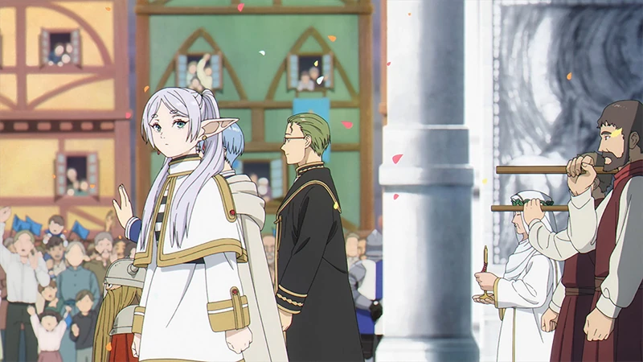
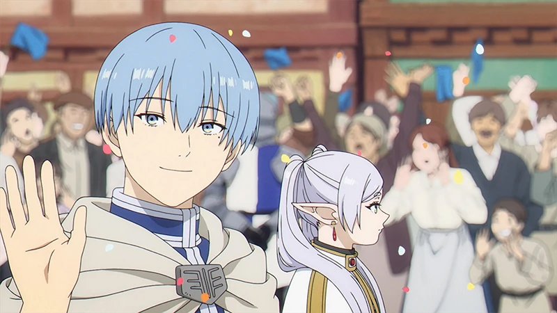
第一章 · 时间 / 不同的钟
他们拥有不同长度的时间。
时间的长短并不决定记忆的重量；真正重要的，是曾经怎样看着彼此。
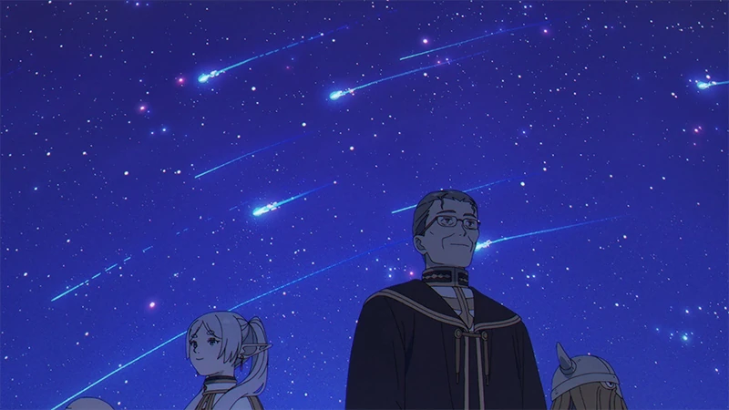
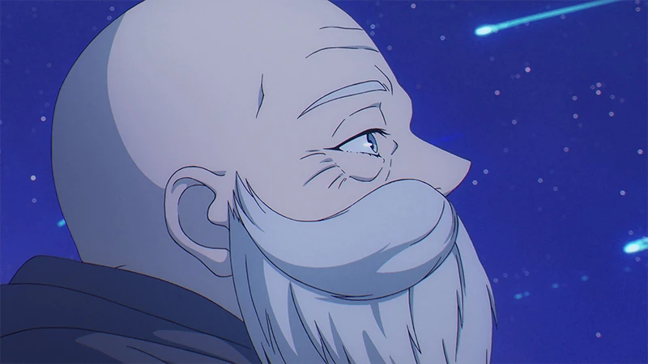
第二章 · 遗憾 / 五十年后
50
五十年后，她没有改变，
五十年后，她没有改变，
辛美尔却已经老去。
长寿让等待显得轻易，也让她错过了陪一个人慢慢变老的过程。
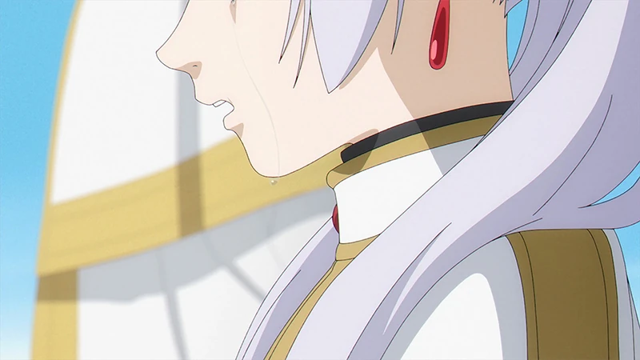
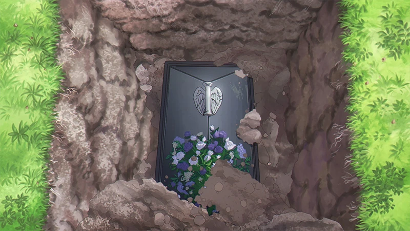
第二章 · 遗憾 / 迟到的问题
直到葬礼，她才第一次
直到葬礼，她才第一次
为自己的迟钝流泪。
遗憾不是忘记了一个人，而是终于想了解他时，已经没有机会再问。
第二章 · 遗憾 / 多年以后
当时没能理解的动作，
当时没能理解的动作，
后来都有了答案。
记忆从未消失。戒指、牵手、一次回头，只是在多年以后才被她真正读懂。
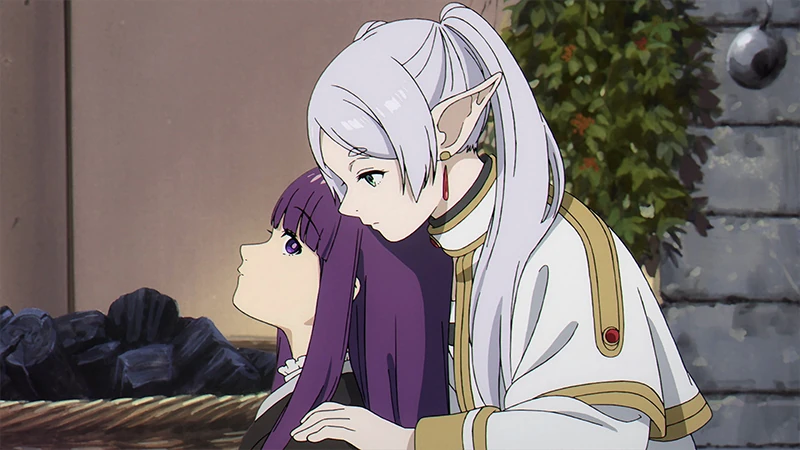
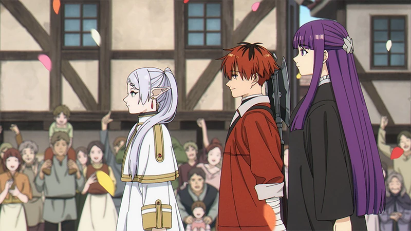
第三章 · 当下 / 新的同行者
她与菲伦、修塔尔克
她与菲伦、修塔尔克
再次出发。
理解逝去的人，要从珍惜眼前的人开始——包括生日、争吵和每一个普通黄昏。
第三章 · 当下 / 并肩而行
新的旅途仍有魔法、
新的旅途仍有魔法、
危险与选择。
真正改变她的，不是又一次胜利，而是在并肩战斗时开始看见同伴真正的样子。
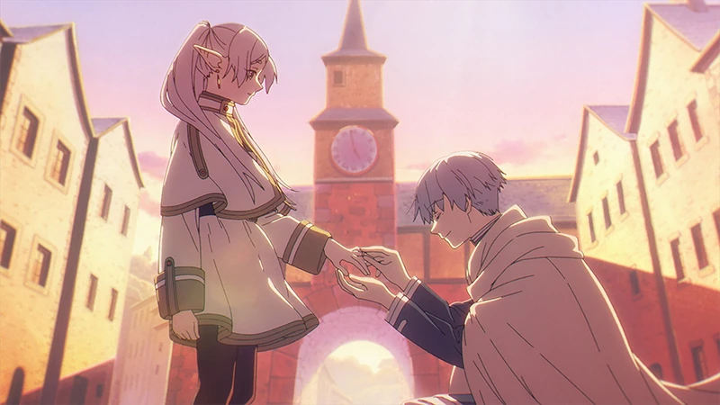
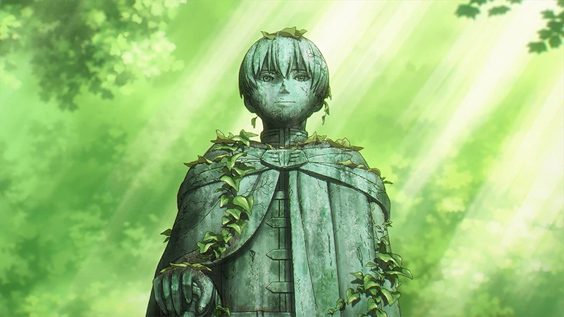
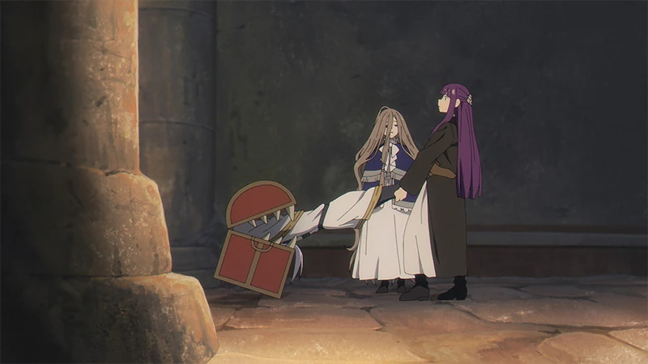
第四章 · 记忆 / 被留下的小事
宏大的冒险会被记载，
宏大的冒险会被记载，
小事却更像一个人。
一个花环、一枚戒指、一句随口的称赞，反而会在漫长时间里不断重新开花。
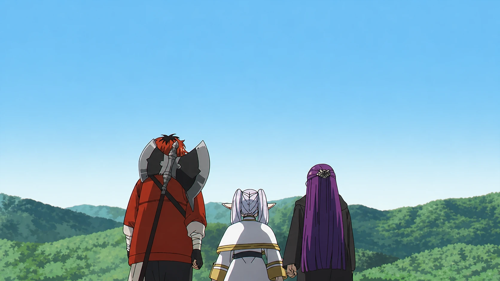
第四章 · 记忆 / 向北方
他们继续向北，
他们继续向北，
前往魂眠之地。
这趟旅途的终点不是答案，而是一次迟到很久的见面，和终于能够说出口的话。
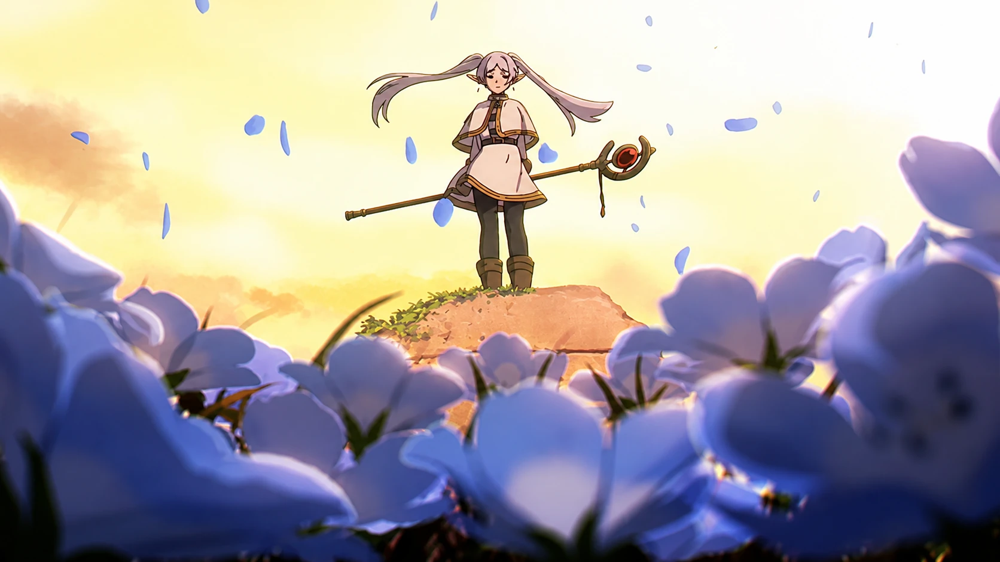
尾声 · 你的记忆
如果很多年后回头，